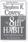
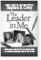
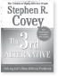
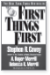
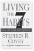
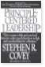

Want to learn more about how to develop yourself personally, lead your team, or transform your organization? There are three ways you can engage with FranklinCovey to learn more about how to apply these principles personally and professionally:
1. Take the Personal Effectiveness Quotient (PEQ)
To see how effective you are—where your strengths lie and how you can improve—take the Personal Effectiveness Quotient (PEQ) at www.7HabitsPEQ.com.
2. Award-Winning Training
Attend a live or live-online three-day The 7 Habits of Highly Effective People training. In this dynamic, principle-based program, you will learn how to take initiative, balance key priorities, improve interpersonal communication, leverage creative collaboration, and apply principles for achieving a balanced life. |
|
Are you a leader? Would you like to lead using the 7 Habits paradigms, principles, and tools? Attend this live or live-online two-day training to learn how to be a more effective leader and manager. |
|
You can be an 8th Habit leader. FranklinCovey’s Leadership: Great Leaders, Great Teams, Great Results program builds on the powerful principles of The 7 Habits of Highly Effective People and helps you find your voice and helps others find theirs. This three-day program is offered live or live-online. |
Certify to Teach FranklinCovey Curriculum. You can certify to become a licensed FranklinCovey facilitator within your organization.
For addition information on any of these training offerings or to become a FranklinCovey facilitator, please visit us at franklincovey.com/leadership.
3. Bestselling Books by Dr. Stephen R. Covey
|  | The 8th Habit: From Effectiveness to Greatness Discover the 8th Habit and how to be a more effective leader in all parts of your life. |
|  | The 3rd Alternative Learn how to solve conflicts and create synergistic solutions by building 3rd Alternatives. |
|  | Living The 7 Habits Read stories by people whose lives have been changed by living the 7 Habits. |
|  | The 7 Habits of Highly Effective Families Learn how to apply the 7 Habits to strengthen your family. |
|  | The Leader in Me See how schools around the world are transformed by the 7 Habits principles. |
|  | First Things First Discover how to Put First Things First in your personal and professional life. |
| Principle-Centered Leadership Learn the core principles of leadership effectiveness in this practical handbook for leaders. |
|
| Great Work, Great Career Apply the 7 Habits principles to your work and career to create meaningful and lasting impact. |
FranklinCovey Co. (NYSE: FC) is a global company specializing in performance improvement. We help organizations achieve results that require a change in human behavior. Our expertise is in seven areas: leadership, execution, productivity, trust, sales performance, customer loyalty, and education. FranklinCovey clients have included 90 percent of the Fortune 100, more than 75 percent of the Fortune 500, thousands of small- and mid-sized businesses, as well as numerous government entities and educational institutions. FranklinCovey has more than 40 direct and licensee offices providing professional services in over 140 countries. For more information, visit www.franklincovey.com.